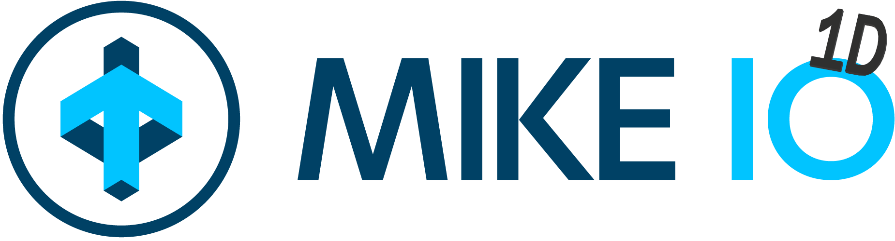

Welcome to MIKE IO 1D’s documentation!


MIKE IO 1D is a python library for reading and modifying network result files (e.g. .res1d). Its target audience is scientists, engineers, and modellers working with MIKE 1D network results.
For other MIKE files (dfs0, dfs1, dfs2, dfsu, and mesh files) use the related package MIKE IO
Caution
MIKE IO 1D is under development and could be subject to changes.
Requirements
Windows, Linux (experimental)
Python x64 3.8 - 3.12
(Windows) VC++ redistributables (already installed if you have MIKE)
(Linux) .NET Runtime (not installed by default)
Installation
$ pip install mikeio1d
Linux users will need to install .NET runtime. If you’re on the development branch, you need .NET SDK. Ubuntu users can install these dependencies as follows:
$ sudo apt install dotnet-runtime-7.0
$ sudo apt install dotnet-sdk-7.0
Getting started
>>> from mikeio1d import Res1D
>>> res = Res1D('simple.res1d')
>>> df = res.read()
Read more in the getting started guide.
Where can I get help?
New ideas and feature requests - GitHub Discussions
Bugs - GitHub Issues